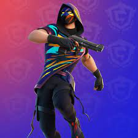
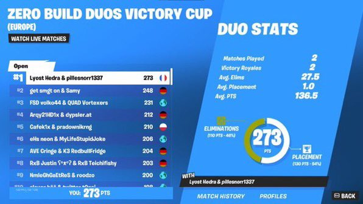
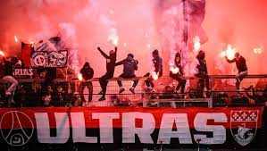
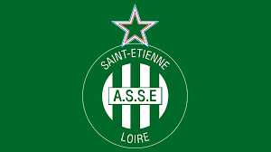
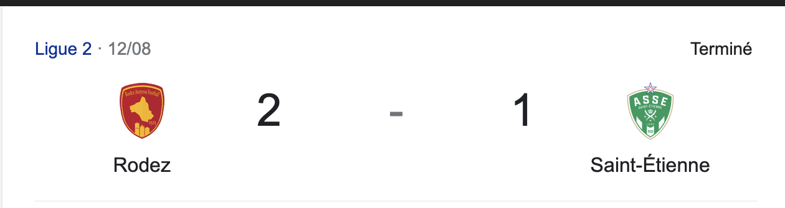

Home
Home
 Explore
Explore
 Notifications
Notifications
 Messages
Messages
 Profile
Profile
 More
More
38m
recherche d'un stage de fin d'etudes en marqueting et communication


15h
1ST FINAL DUO CASH CUP W/@Thenono (1000$)
IM THE BEST PLAYER IN THE WOLRD OMGG


15h
4-0 contre l'om je suis trop heureux

38m
Encore perdu sa ne changera jamais mais le point positif on aura bientot le derby en ligue 2
#allerlesvert


38m
comment ca ils veullent retirer le balon d'or de benzema
38m
Sainte qui perd encore et lyon aussi on pourait donc bien assister au retour des derby la saison prochaine